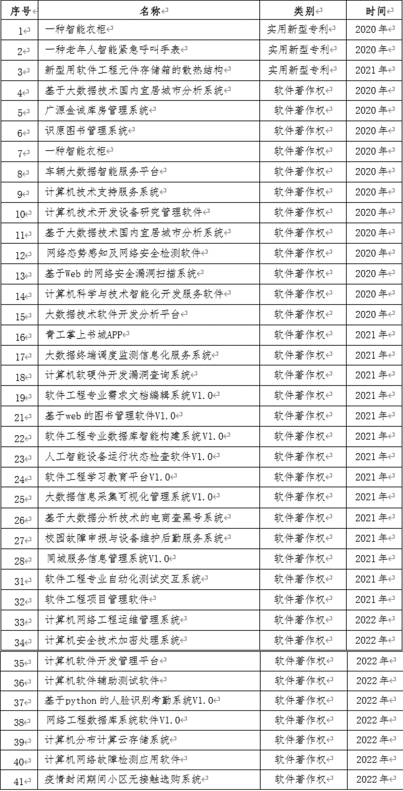

△我校近几年专利，软著申请成功名单
△软著证书展示（部分）
△专利证书展示（部分）
我校成功申请专利软著，获得权威证书认可
近日，我校传来喜讯，多项由我校师生共同研发的软件成功申请到专利软著，并获得了国家知识产权局颁发的权威证书。这是我校在知识产权保护方面取得的又一重要成果，充分展现了我校在科研创新和知识产权保护方面的实力。
专利软著的研发团队由我校信息学院的多名教师和优秀学生组成。在研发过程中，团队成员充分发挥专业优势，针对当前市场需求和技术发展趋势，进行了深入的分析和研究，最终成功开发出具有自主知识产权的软件产品。
在申请专利软著的过程中，我校知识产权管理部门给予了大力支持，协助研发团队完成了申请材料的准备和提交工作。经过国家知识产权局的严格审查和评估，该专利软著最终获得了授权，并获得了相应的证书。 此次获得专利软著证书不仅是对我校师生创新成果的认可，也是对我校知识产权保护工作的肯定。这一成果的取得将进一步激发我校师生的创新热情，推动学校科研工作的深入开展。
作为学校的一份子，我们为能够在知识产权保护方面取得如此重要的成果感到无比自豪。这充分证明了我校在培养学生创新意识和实践能力方面的优秀教育理念和教学方法。 未来，我校将继续加强知识产权保护工作，鼓励师生积极申请专利、软件著作权等知识产权，推动学校科研成果的转化和应用，为国家的科技创新和经济发展做出更大的贡献。